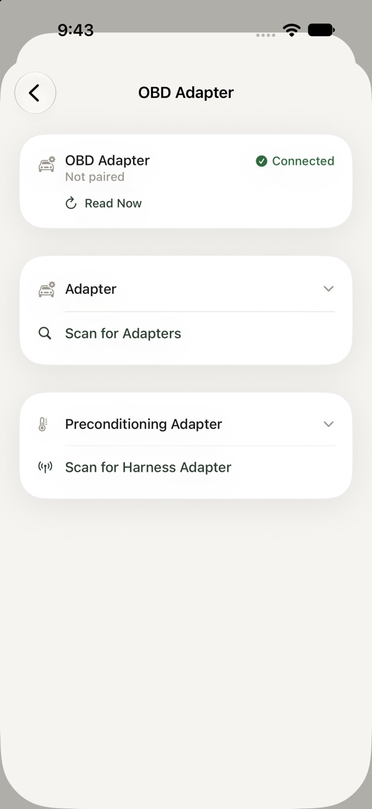
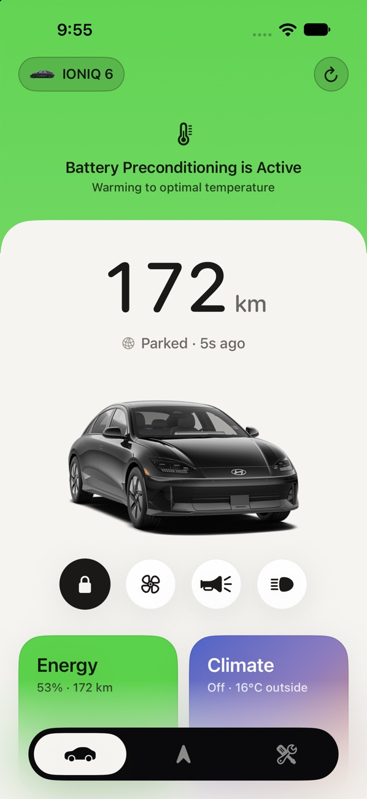
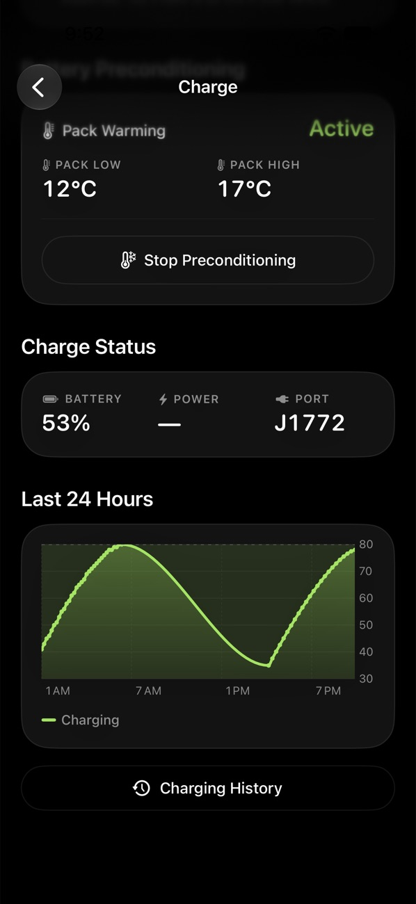

Hardware Setup
Bluelink alone runs the app. Two optional adapters add the rest.
| Feature | OBD-II Adapter | Harness Adapter |
|---|---|---|
| Basic OBD sync (live charge, trips, locks) | ✅ | |
| CarPlay navigation | ✅ | |
| Battery preconditioning (manual) | ✅ | |
| Auto-precondition on a DC-fast route | ✅ | ✅ |
| Cluster and HUD directions | ✅ | ✅ |
The two jobs need two adapters because they live on different parts of the car: the battery answers on the OBD-II port, while the cluster and HUD receive their packets on the bus behind the head unit. Both adapters pair from Settings › OBD Adapter, both reconnect on their own once paired, and the app holds both connections at the same time.
Basic OBD Sync
What You Need
- A Bluetooth Low Energy ELM327-compatible OBD-II adapter. Classic Bluetooth adapters can't talk to an iPhone, so check the listing says BLE or iOS. Numen recognises the common serial-over-BLE adapters, including the WiCAN OBD.
- An adapter that sleeps on its own when the car is off. The OBD-II port stays powered, and an adapter that never sleeps drains the 12 V battery.
Setting It Up
- Plug the adapter into the OBD-II port under the dash on the driver's side.
- With the car on, open Settings › OBD Adapter and tap Scan for Adapters.
- Choose your adapter. Numen remembers it and reconnects whenever you get in.

What It Reads
While connected, the app reads the car every 60 seconds: displayed state of charge, whether it's charging and the real charge power, battery temperature, and door, trunk, hood and lock state. It also reads the battery's lifetime energy counters, which is where per-trip regen comes from.
The requests come from the OBDb IONIQ 6 signal set, plus a few body-module values I decoded myself. Other e-GMP cars share most of the battery side, but only the IONIQ 6 has been tested.
Battery Preconditioning
Preconditioning warms the high-voltage battery before a DC fast charge so the car takes full power from the moment you plug in. The car only starts it on its own when the built-in navigation is heading to a fast charger, so a CarPlay route never does. The harness adapter starts it for you instead.
What You Need
- The Ioniq5_CAN harness kit, installed behind the head unit, with its WiCAN on the multimedia CAN bus.
- The WiCAN running the
firmware/Numenbranch of my firmware fork. Stock firmware only starts preconditioning from a physical button; the fork adds a command so the app can start, stop and check on it over Bluetooth. Install the latest Numen firmware release from the WiCAN's local web page, no build needed. After that, Numen updates it for you. - For Auto-Precondition on DC-Fast Route, the OBD-II adapter too, and a Numen route in CarPlay that ends at a DC fast charger.
Setting It Up
- With the car on, open Settings › OBD Adapter and tap Scan for Harness Adapter.
- Choose the WiCAN and accept the iOS pairing prompt.
- Precondition Battery now appears on the Charge screen. Turn on Auto-Precondition on DC-Fast Route in Settings if you want it to start by itself.
- When a firmware update is ready, Update Adapter appears under the adapter in Settings › OBD Adapter. It takes about a minute. Keep Numen open while your phone joins the adapter's Wi-Fi. This only works once the WiCAN is running the Numen firmware; before that, install the latest Numen firmware release from the WiCAN's local web page.


Good to Know
- It only works while your phone is connected to the adapter, so you need to be at the car. Bluelink has no way to start it remotely.
- The car decides when the battery is warm enough. If the pack is already at temperature, or the charge is too low, it turns the request down, and the app tells you so within about 50 seconds.
- "Preconditioning" here means the battery. Cabin climate is separate, and both can run together.
Cluster and HUD Directions
Turn arrows, distance to the turn, street names and lane guidance from a CarPlay route appear on the instrument cluster and the head-up display, as they do with the built-in navigation.


What You Need
- The harness adapter running the
firmware/Numenfirmware described above. Older firmware doesn't offer the toggle. - The OBD-II adapter, because cluster directions follow a Numen route in CarPlay. Apple Maps and other CarPlay apps don't send directions to the cluster.
- The frame layouts were decoded on an IONIQ 6. Lanes and arrows on the HUD need a car fitted with one.
Setting It Up
- Pair the harness adapter as described above.
- With the car on and the adapter connected, turn on CarPlay Directions in Cluster in Settings. The toggle appears once the app confirms the connected firmware supports it.
- Start a route in Numen on CarPlay.
Good to Know
- This is experimental. The head unit keeps sending its own navigation frames and the firmware sends corrected copies straight after them, so an arrow can flicker now and then.
- Directions clear from the cluster and HUD when you arrive, end guidance, or the phone disconnects.